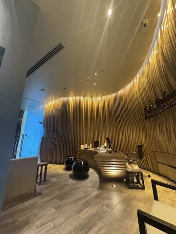

Let's Relax Spa — в нашем отеле
🏨 в отеле · ⭐ 4,8 · от 700 ฿
Чисто, вид на море, после массажа — манго с клейким рисом
Let's Relax Spa — в нашем отеле
🏨 в отеле · ⭐ 4,8 · от 700 ฿
чистота, часть кабинетов с видом на море, после массажа — манго с клейким рисом; тайский «не слишком жёсткий»
- Где
- в отеле, 2 этаж
- Цены
- дорого: от ≈ 700 бат; тайский 2 ч ≈ 1300, стопы 1 ч ≈ 875, пакеты 1200–5000 (меню сети Let's Relax)
- Часы
- 10:00–22:00 (пт–сб до 23:00)
- Хвалят
- чистота, часть кабинетов с видом на море, после массажа — манго с клейким рисом; тайский «не слишком жёсткий»
- Нюансы
- процедуры с 12 лет; Нина может подождать со взрослым в лобби; бронь через ресепшен; чаевые ≈ 100 бат